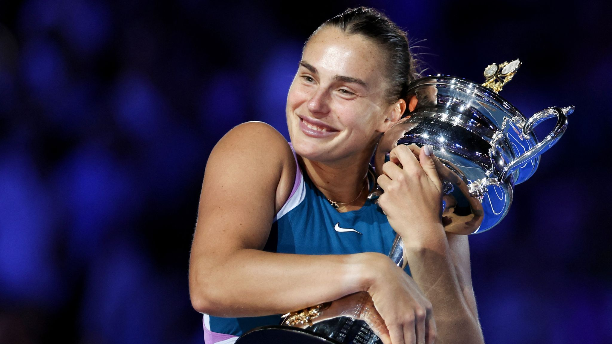

Por tercera semana consecutiva, el equipo de tenis masculino del oeste de Michigan ganó los honores del Equipo de la semana de dobles de tenis masculino de la Conferencia Mid-American, con los juniors Brogan Pierce y Benjamin George anunciados el jueves por el MAC.
George y Pierce se combinaron para terminar 1-1 en dobles durante el fin de semana. En el partido de WMU contra Wisconsin, el dúo ocupó el segundo lugar y derrotó a Robin Parts y Sebastian Vile por 6-2. Contra Yale, jugaron en el No. 2 nuevamente, pero cayeron 6-2 ante Theo Dean y Aidan Reilly.
George, Pierce y los Broncos están libres este fin de semana y regresan a la acción el próximo viernes 17 de febrero cuando reciban a la Universidad de Drake a las 11 a. m. WMU luego se dirige a enfrentarse a Indiana el domingo a las 11 a. m.
Aryna Sabalenka tiene una cuenta pendiente en Stuttgart. La actual número dos del mundo ha disputado dos veces la final del Porsche Tennis Grand Prix, pero nunca ha podido ganar. Este año se ven muy buenas las posibilidades de que, en su tercer intento, finalmente se quede con el título del prestigioso torneo y se lleve a casa el premio principal, un Porsche.